Cups explores emotional life: what we feel, how we connect, what we hope for, and the care that helps us remain open. Its common modern element is Water, which offers a useful image for feelings that move, gather, overflow, or need a containing bank. Sensitivity becomes more useful when it travels with honest communication and boundaries.
Emotion, relationships, imagination, intuition, and the give-and-take of care.
Cups is not limited to romance. It can concern a friendship, a creative project, a memory, an emotional need, or the atmosphere in a group. Several Cups may invite closer attention to how you are receiving and expressing care. They do not reveal another person’s private feelings as fact. Ask a question and listen to the answer instead of treating a card as access to someone else’s inner world.
02 / Understanding Cups
The story from Ace to Ten
The Ace opens to feeling and the Two explores mutual exchange. The Three celebrates companionship, while the Four pauses around disengagement or an overlooked offer. The Five acknowledges disappointment and the Six revisits memory and familiar kindness. The Seven considers possibilities and idealization; the Eight asks whether it is time to seek something more meaningful. The Nine recognizes contentment, and the Ten explores shared belonging. Joy and sadness both belong in the suit.
03 / Understanding Cups
Reading the court cards
The Page approaches a feeling with curiosity, and the Knight gives it an invitation or expressive gesture. The Queen offers empathy with emotional attentiveness; the King practices steadiness without suppressing feeling. Each role has a shadow: naivety, idealization, overgiving, or emotional distance. These are available ways of responding, not fixed identities or rules about gender.
04 / Understanding Cups
Reading Cups in your own life
In a relationship, ask what care looks like in behavior as well as intention. In creative work, give imagination something tangible to inhabit. If a reading feels emotionally intense, return to the present and identify one need you can express directly. “What am I feeling, and what would support me?” is often more useful than “What do the cards say they secretly feel?”
What feeling needs acknowledgement, and what boundary would help me meet it with care?
A question to carry into your reading
Ace to King / Upright meanings
Meet the Cups.
Fourteen perspectives, not fourteen predictions. Open a card for a practical focus and a reflection prompt. The court cards describe approaches anyone can use.
Ace
Ace of Cups
openness, care, beginning
Read this card
Make a little room for affection, a creative impulse, or a sincere offer of connection.
Notice what you felt when you let yourself receive care without immediately repaying it.
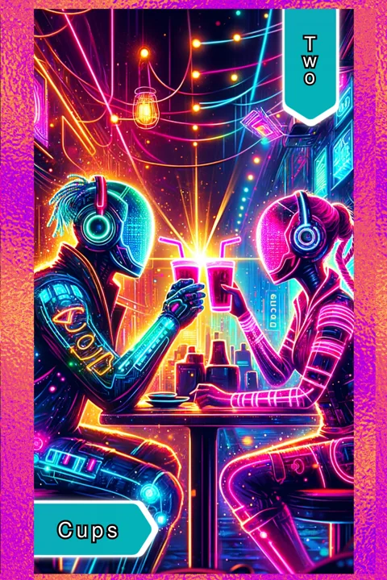
Two
Two of Cups
mutuality, partnership, exchange
Read this card
Give a connection your full attention and make your own needs part of the conversation.
Reflect on a moment when both people had room to contribute honestly.
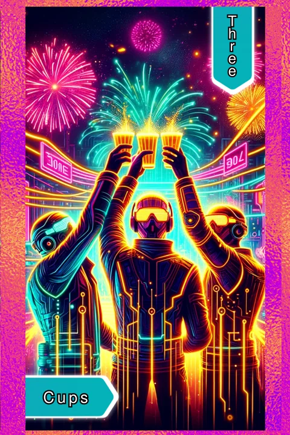
Three
Three of Cups
friendship, celebration, belonging
Read this card
Reach toward supportive company and celebrate something small without needing a special occasion.
Ask how shared enjoyment helped you feel connected rather than merely occupied.
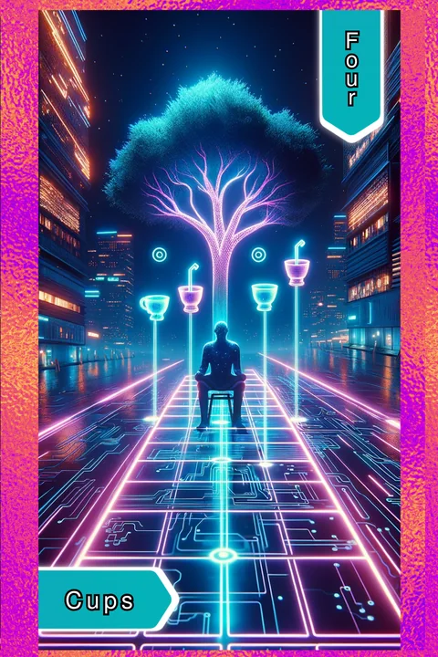
Four
Four of Cups
disengagement, pause, attention
Read this card
Check whether you need rest, a change, or a closer look at an offer you have dismissed.
Notice what withdrawing helped you understand and what it kept you from receiving.
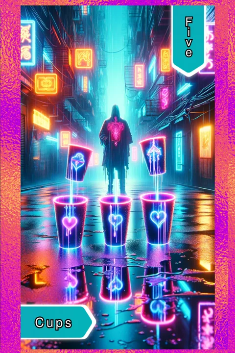
Five
Five of Cups
disappointment, grief, perspective
Read this card
Give a loss or frustration its due while noticing one source of support that is still present.
Reflect on what you missed and what remained available beside the disappointment.
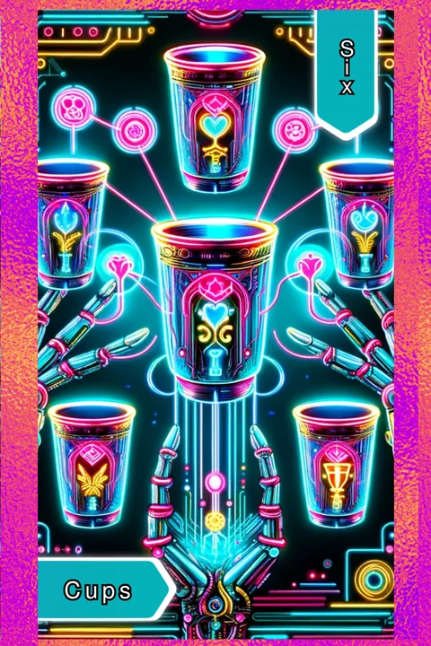
Six
Six of Cups
memory, kindness, familiarity
Read this card
Let a happy memory inspire a kind gesture that fits your life now.
Ask which part of a familiar pattern nourished you and which belonged in the past.
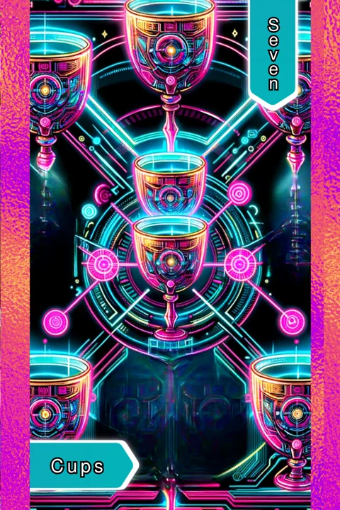
Seven
Seven of Cups
possibilities, fantasy, discernment
Read this card
Choose one option to investigate rather than treating every appealing possibility as an equal commitment.
Notice the difference between a compelling image and a choice you were ready to live with.
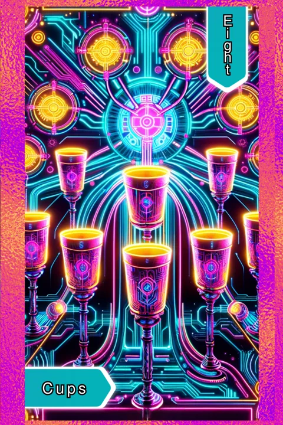
Eight
Eight of Cups
departure, values, search
Read this card
Consider whether a familiar commitment still offers the meaning you need, then take a thoughtful next step.
Reflect on what stepping back revealed about your changing priorities.
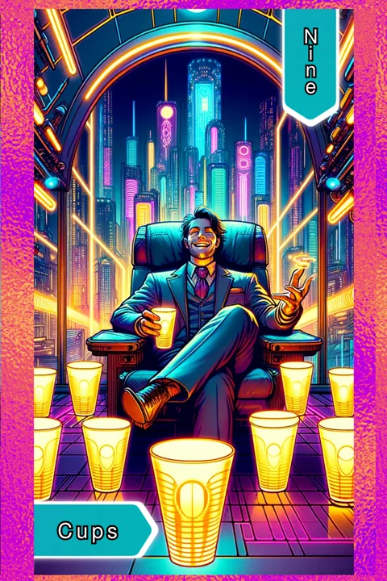
Nine
Nine of Cups
contentment, enjoyment, appreciation
Read this card
Pause to enjoy something that is already satisfying before adding another condition to your happiness.
Ask what genuine contentment felt like when it did not need to impress anyone.
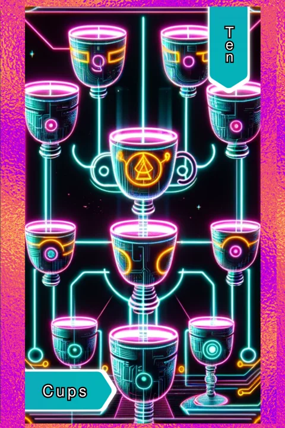
Ten
Ten of Cups
connection, harmony, shared joy
Read this card
Contribute to a supportive atmosphere through one honest, considerate act.
Reflect on the daily behaviors that helped a relationship feel welcoming.
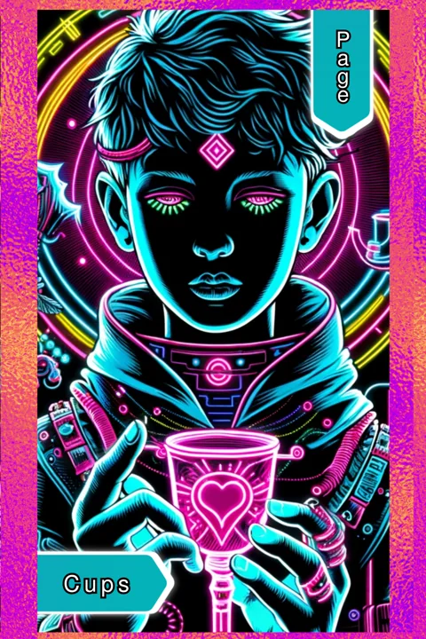
Page
Page of Cups
sensitivity, curiosity, expression
Read this card
Give an emerging feeling or creative idea a gentle way to be expressed.
Notice what happened when you admitted a feeling before trying to polish it.
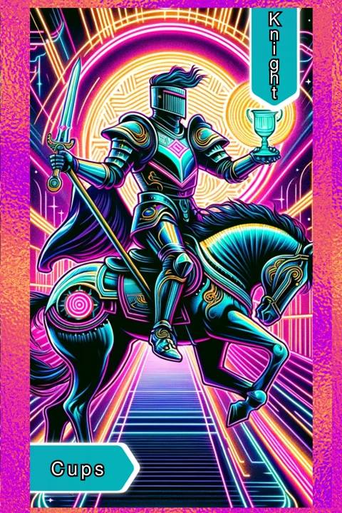
Knight
Knight of Cups
romance, invitation, intention
Read this card
Offer an invitation or creative proposal with sincerity and a realistic promise.
Ask whether an inspiring gesture was supported by dependable follow-through.
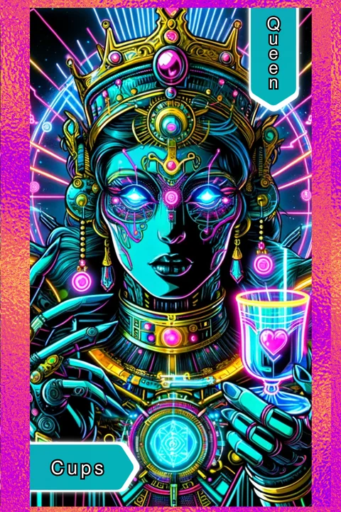
Queen
Queen of Cups
empathy, intuition, boundaries
Read this card
Listen carefully while checking what support you can genuinely offer.
Reflect on how a compassionate boundary protected your ability to remain caring.
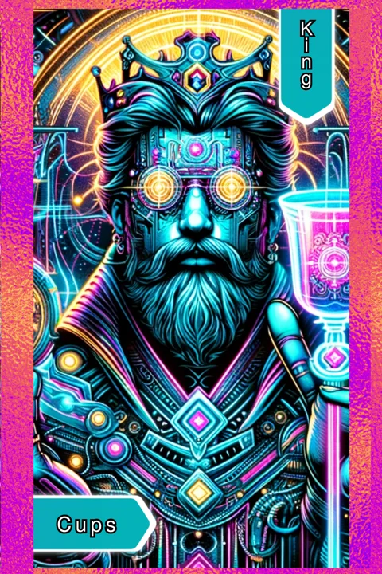
King
King of Cups
steadiness, compassion, maturity
Read this card
Make space for a strong feeling without letting it make every decision for you.
Ask where emotional steadiness allowed a more thoughtful response.